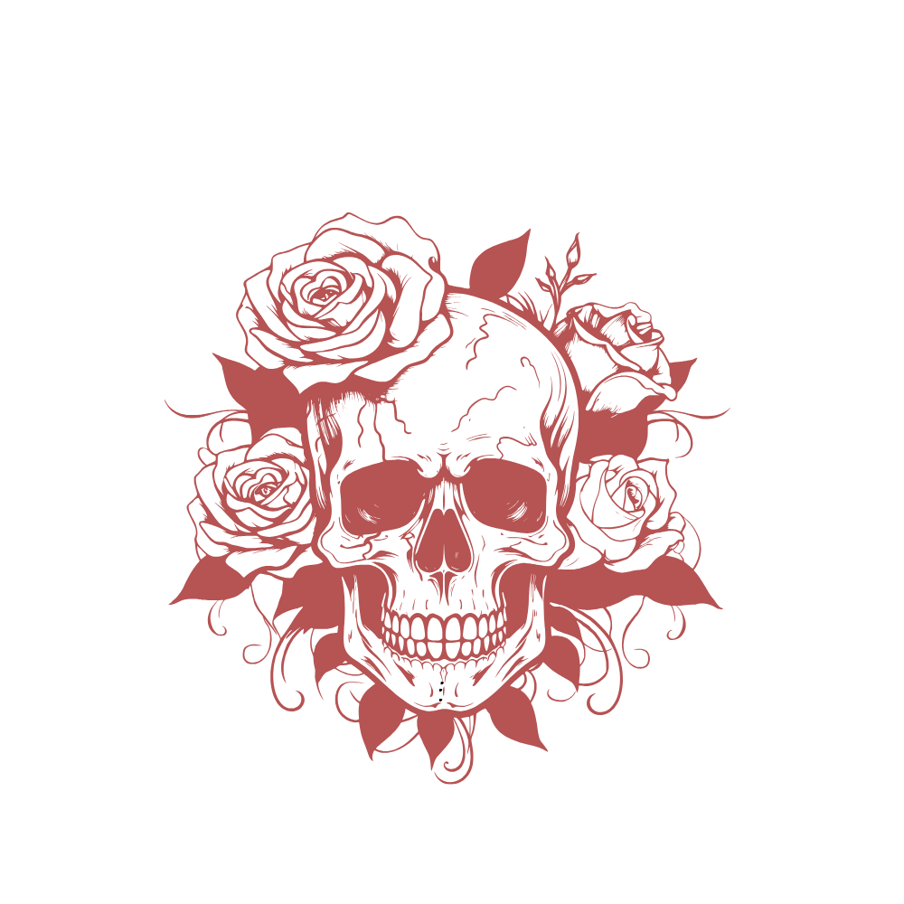
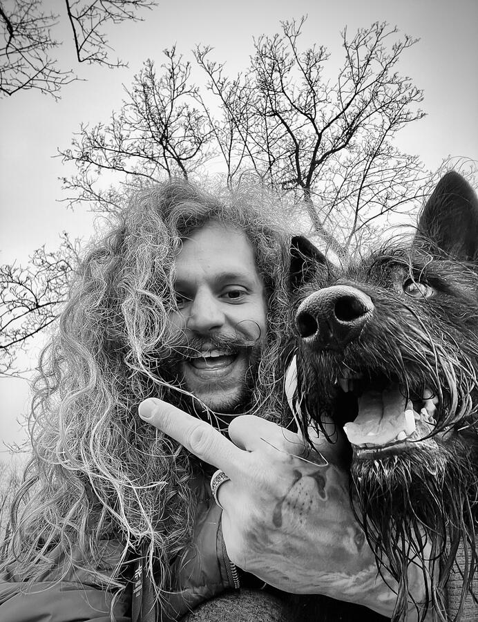

Der eigene Kurs
Paddy tätowiert nicht nach Trend oder Terminplan – sondern wenn Mensch, Motiv und Moment zusammenpassen.

Es gibt Menschen, die einen Job machen. Und es gibt Menschen, die einfach sind, wer sie sind – und das zufällig zum Beruf gemacht haben. Paddy gehört zur zweiten Sorte. Für die einen ist er der Typ mit der Nadel. Für alle, die ihn kennen, ist er einfach: der Kapt'n.
Paddy hat nie den geraden Weg gesucht. Schon lange bevor die erste Nadel Haut berührte, war klar: ein Leben nach fremdem Fahrplan würde nicht reichen. Musik, Reisen, Menschen mit echten Geschichten – daraus ist mit der Zeit die Kunst geworden, die heute sein Handwerk ist.
Tätowieren war für ihn nie ein Trend. Es war die logische Konsequenz aus einem Leben, das sich nie mit der Oberfläche zufriedengegeben hat. Wer bei ihm sitzt, merkt schnell: Hier redet jemand mit dir, nicht über dich. Der Kapt'n hört zu, bevor er zeichnet – und zeichnet erst, wenn er wirklich verstanden hat, was du für immer tragen willst.
Halb wilder Freigeist, halb ruhiger Zuhörer – diese Mischung ist sein Markenzeichen. Kein lauter Auftritt, keine Show. Dafür echte Präsenz, im Gespräch genauso wie an der Maschine.
„Mut ist der Anfang von Freiheit. Und Freiheit sieht man manchmal einfach an der Haut.“
— Kapt'n Paddy
Paddy tätowiert nicht nach Trend oder Terminplan – sondern wenn Mensch, Motiv und Moment zusammenpassen.
So halbwild er wirkt: Im Atelier ist er ruhig, präsent und mit ganzer Aufmerksamkeit bei dir.

Er sagt, was er denkt – auch wenn ein Motiv nicht zu dir passt. Lieber ehrlich als bequem.



Bereit, den Kapt'n kennenzulernen?